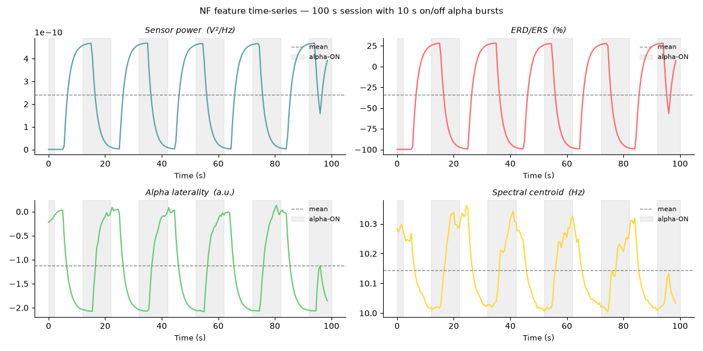

Note
Go to the end to download the full example code.
Complete closed-loop NF session#
Full end-to-end pipeline with ANT:
Simulate a 64-channel EEG recording with a strong, rhythmic alpha modulation pattern — 10 s alpha-ON bursts alternating with 10 s silence.
Stream it through a mock LSL player.
Record a resting-state baseline and compute the noise covariance.
Run a 100-second closed-loop NF session extracting four modalities in parallel.
Save the NF data (JSON + BIDS-compatible TSV) and generate an HTML report.
Inspect the feature time-series — the 10 s on / 10 s off alpha rhythm is clearly visible as modulation in every NF feature.
The three interactive windows — SignalPlot (NF signal),
TopomapPlot (scalp topomap), and
BrainPlot (3D brain) — open automatically during
record_main when show_nf_signal=True, show_topo=True, and
show_brain_activation=True respectively. This example runs headlessly
for documentation purposes.
Interactive session
To open all three live windows, change the record_main call to:
nf.record_main(
duration=100,
modality=["sensor_power", "erd_ers", "laterality", "spectral_centroid"],
show_nf_signal=True,
show_topo=True,
show_brain_activation=True, # requires subjects_fs_dir
)
Simulate a recording#
simulate_raw() generates a synthetic 64-channel BioSemi EEG
recording with a configurable alpha burst pattern projected from the left
lateral-occipital cortex.
Here we create a 10 Hz alpha rhythm that turns ON for 10 seconds, then
OFF for 10 seconds, repeating 6 times — a total of ~112 seconds. Using
amplitude=50.0 (50× physiological baseline) ensures the alpha clearly
dominates the noise so that every NF modality shows visible modulation in
the final plots.
Timeline in the 100 s main session (after the 10 s baseline):
Main t (s): 0──2 12──22 32──42 52──62 72──82 92──100
■■■■ ██████ ██████ ██████ ██████ ██████
↑ alpha-ON bursts (grey shading in plots)
from pathlib import Path
import matplotlib.pyplot as plt
import numpy as np
from mne_rt import RTStream
from mne_rt.tools import simulate_raw, save_as_bids
# Results land in ~/ANT_session_results — inspect subject dir and HTML report there
tmp = Path.home() / "ANT_session_results"
tmp.mkdir(parents=True, exist_ok=True)
# Simulate: 10 Hz alpha, 10 s ON / 10 s OFF, 6 repetitions → ~112 s recording
fname_sim = tmp / "simulated_eeg.fif"
simulate_raw(
brain_label="lateraloccipital-lh",
frequency=10.0,
amplitude=50.0, # strong alpha so modulation is unambiguous in NF plots
duration=10.0, # each alpha burst lasts 10 s
gap_duration=20.0, # 20 s between burst onsets (= 10 s ON + 10 s OFF)
n_repetition=6,
start=2.0,
data_type="eeg",
sfreq=256.0,
fname_save=str(fname_sim),
verbose=False,
)
print(f"Simulated EEG saved to: {fname_sim}")
/home/runner/work/mne-rt/mne-rt/docs/source/../../src/mne_rt/tools/simulation.py:222: RuntimeWarning: No average EEG reference present in info["projs"], covariance may be adversely affected. Consider recomputing covariance using with an average eeg reference projector added.
add_noise(raw, cov, iir_filter=iir_filter, verbose=verbose)
Simulated EEG saved to: /home/runner/ANT_session_results/simulated_eeg.fif
Set up the NF session#
RTStream holds all session state: subject metadata, LSL
stream handle, inverse operator, and recorded NF data.
subjects_dir = tmp / "subjects"
subjects_dir.mkdir(exist_ok=True)
nf = RTStream(
subject_id="sub01",
session="01",
subjects_dir=str(subjects_dir),
montage="biosemi64",
data_type="eeg",
verbose=False,
)
Connect to the mock LSL stream#
mock_lsl=True starts an mne_lsl.lsl.PlayerLSL that replays the
simulated FIF file as a real-time LSL stream at its original sampling rate.
Replace mock_lsl=False and remove fname to connect to a live amplifier.
nf.connect_to_lsl(mock_lsl=True, fname=str(fname_sim), verbose=False)
Record a resting-state baseline#
The 10-second baseline is used to:
Estimate channel-wise power for ERD/ERS normalisation.
Fit the forward model and inverse operator (required for source modalities).
Compute a blink template for artefact detection.
For this headless example we use only sensor-space modalities so the inverse
operator step is skipped (compute_inv=False).
nf.record_baseline(baseline_duration=10, verbose=False)
Run the closed-loop NF loop#
Four sensor-space modalities are computed in parallel on each 1-second window
with 50 % overlap. track_snr=True stores a per-window broadband SNR
estimate; track_artifact_rate=True keeps a running fraction of rejected
windows. Both are included in the saved JSON and TSV automatically.
signal_smoothing=0.25 applies a light exponential moving average (EMA)
to each modality trace so the NF signal plots are smooth without hiding
the underlying alpha modulation rhythm.
All display windows are disabled here; see the note at the top of the example for how to enable them interactively.
nf.record_main(
duration=100,
modality=["sensor_power", "erd_ers", "laterality", "spectral_centroid"],
winsize=1.0,
signal_smoothing=0.25,
track_snr=True,
track_artifact_rate=True,
show_nf_signal=False,
show_raw_signal=False,
show_topo=False,
save_raw=True,
verbose=False,
)
Save data and generate the HTML report#
save() writes the NF feature time-series as a JSON
file under beh/<stem>_task-neurofeedback_beh.json. The JSON contains:
"meta"— subject, session, modalities, sfreq, duration, artifact correction, artifact_rate (fraction of rejected windows), start/end timestamps."data"— per-modality value lists, plus"snr_db"whentrack_snr=Truewas used.
Passing bids_tsv=True additionally writes a tab-separated
*_beh.tsv alongside the JSON — one column per modality plus snr_db
— which passes the BIDS validator and can be opened directly in Excel,
EEGLAB, or any TSV reader. The "nf_tsv" key in the returned dict
points to that file.
saved = nf.save(bids_tsv=True)
for kind, path in saved.items():
print(f" [{kind:8s}] → {path}")
report_path = nf.create_report(open_browser=False)
print(f" [report ] → {report_path}")
[nf_data ] → /home/runner/ANT_session_results/subjects/sub-sub01/ses-01/beh/sub-sub01_ses-01_task-neurofeedback_beh.json
[nf_tsv ] → /home/runner/ANT_session_results/subjects/sub-sub01/ses-01/beh/sub-sub01_ses-01_task-neurofeedback_beh.tsv
[report ] → /home/runner/ANT_session_results/subjects/sub-sub01/ses-01/reports/sub-sub01_ses-01_report.html
Export session in BIDS format#
save_as_bids() writes a fully BIDS-compliant directory
tree: the baseline raw recording as *_eeg.fif, the per-window NF feature
time-series as *_beh.tsv, and the mandatory sidecar files
dataset_description.json and participants.tsv.
This is separate from save(), which writes ANT’s own
working directory layout. Use save_as_bids() when you
need to share the data with collaborators or submit it to a repository.
bids_dir = tmp / "bids"
bids_path = save_as_bids(
raw=nf.raw_baseline,
nf_data=nf.nf_data,
output_dir=bids_dir,
subject="sub01",
session="01",
task="neurofeedback",
overwrite=True,
)
print(f" [BIDS ] → {bids_path}")
# Print the BIDS directory tree
for p in sorted(bids_path.rglob("*")):
rel = p.relative_to(bids_path)
indent = " " * (len(rel.parts) - 1)
print(f" {indent}{rel.name}")
[BIDS ] → /home/runner/ANT_session_results/bids
dataset_description.json
participants.tsv
sub-sub01
ses-01
beh
sub-sub01_ses-01_task-neurofeedback_beh.json
sub-sub01_ses-01_task-neurofeedback_beh.tsv
eeg
sub-sub01_ses-01_task-neurofeedback_eeg.fif
Inspect the NF feature time-series#
nf.nf_data is a dict mapping modality name → list of per-window values.
With 50 % overlap (0.5 s hop) over a 100 s session, there are ~198 windows.
The grey vertical bands below mark the expected alpha-ON epochs (t = 0–2, 12–22, 32–42, 52–62, 72–82, 92–100 s from the start of the main session). Each modality should visibly rise or fall during these periods:
sensor_power and erd_ers increase during alpha-ON.
laterality shifts left (positive) since the source is in left occipital.
spectral_centroid shifts toward 10 Hz during alpha-ON.
# Expected alpha-ON windows (seconds, relative to main-session start)
_alpha_on = [(0, 2), (12, 22), (32, 42), (52, 62), (72, 82), (92, 100)]
hop_s = 0.5 # 50 % overlap → 0.5 s per window step
labels = {
"sensor_power": "Sensor power (V²/Hz)",
"erd_ers": "ERD/ERS (%)",
"laterality": "Alpha laterality (a.u.)",
"spectral_centroid": "Spectral centroid (Hz)",
}
palette = ["#5DA5A4", "#FF6B6B", "#6BCB77", "#FFD93D"]
fig, axes = plt.subplots(2, 2, figsize=(12, 6), constrained_layout=True)
for ax, (mod, vals), color in zip(axes.flat, nf.nf_data.items(), palette):
t = np.arange(len(vals)) * hop_s
ax.plot(t, vals, color=color, lw=1.6)
ax.axhline(np.mean(vals), ls="--", lw=1.0, color="#888", label="mean")
for t0, t1 in _alpha_on:
ax.axvspan(t0, t1, alpha=0.12, color="grey",
label="alpha-ON" if t0 == 0 else None)
ax.set_title(labels.get(mod, mod), fontsize=10, fontstyle="italic")
ax.set_xlabel("Time (s)", fontsize=9)
ax.spines[["top", "right"]].set_visible(False)
ax.legend(fontsize=8, loc="upper right", frameon=False)
fig.suptitle(
"NF feature time-series — 100 s session with 10 s on/off alpha bursts",
fontsize=11,
)
plt.tight_layout()

/home/runner/work/mne-rt/mne-rt/examples/ex_complete_nf_session.py:257: UserWarning: The figure layout has changed to tight
plt.tight_layout()
Total running time of the script: (2 minutes 14.092 seconds)